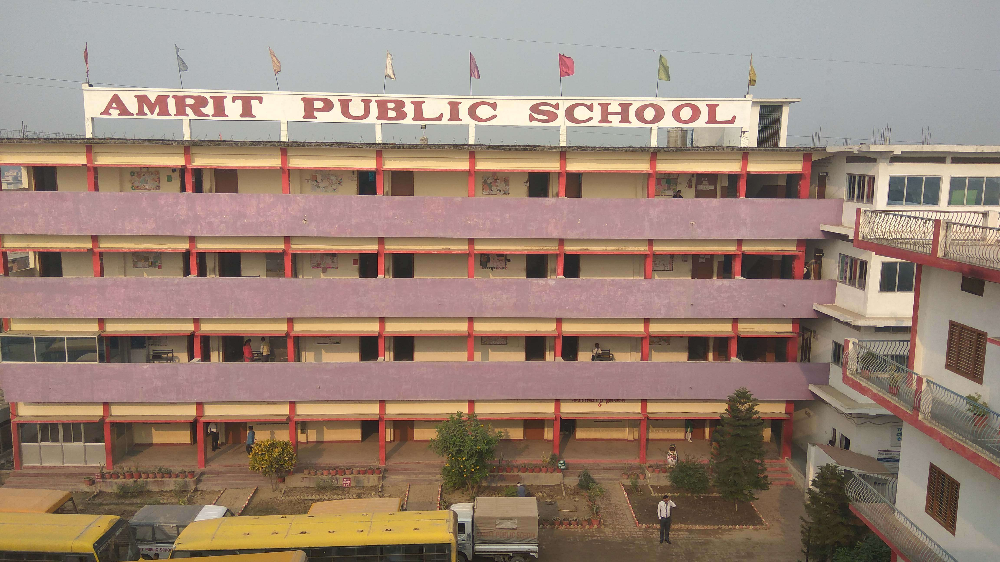

I understand the problem before choosing the tool.
Client needs, stakeholder constraints, process gaps, and measurable outcomes come first.
Associate Consultant -> Data Analyst / Data Scientist / Product Manager
My edge is the handoff between business context and technical execution: requirements, clean data, models, dashboards, and product decisions that stakeholders can understand.
Transition Thesis
Client needs, stakeholder constraints, process gaps, and measurable outcomes come first.
Cleaning, modeling, dashboards, and analysis designed for decision-making instead of decoration.
Strong products make the next decision easier for the person using them.
Case Studies
Loading projects...
Capability Matrix
Each cluster maps to the work expected in Data Analyst, Data Scientist, Product Analyst, and Product Manager roles.
Loading skills...
Proof Log
Experience
Education
Babu Banarasi Das University | BBDU

Amrit Public School | CBSE
Contact
I am open to Data Analyst, Data Scientist, Product Analyst, and Product Manager opportunities where business context and analytical depth both matter.